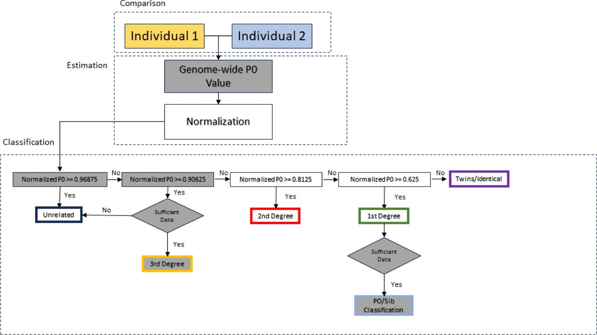
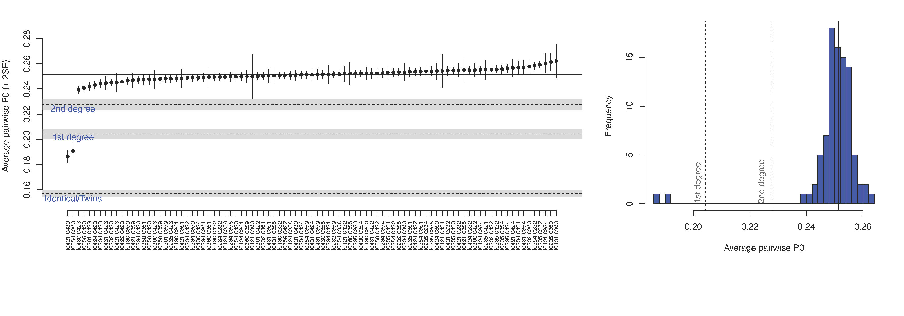
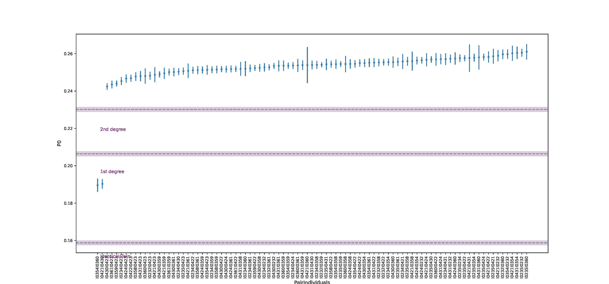

7 Pairwise mismatch rate (PMR) and READ relatedness inference
7.1 Background: Measures of relatedness
7.1.1 Coefficient of relationship
Coefficient of relationship, denoted \(r_{ij}\) , defined by Sewall Wright in 1922 (Wright 1922), is a measure of the degree of biological relationship between two individuals, commonly used in genetics and genealogy. It calculates the proportion of genes that two individuals have in common as a result of their genetic relationship. The coefficient of relationship is a derivative of the coefficient of inbreeding (\(f_k\) or \(C_{I_k}\)) defined by Wright a year earlier. A coefficient of inbreeding for an individual is typically one-half the coefficient of relationship between the parents.
Coefficient of relationship between the parents approaches a value of 1 as the level of inbreeding increases and approaches 0 the more remote the common ancestors are.
In human relationships, coefficient of relationship is often calculated based on the knowledge of the family tree, typically extending to up to three or four generations, using a formula:
\[ r_{ij} = \sum (^1/_2)^{L_{ij}} \] where \(L\) is the numbers of generation links between two individuals (\(i\) and \(j\)). E.g. full siblings are linked by two links through the mother (siblingA - mother - siblingB) and two links through the father (siblingA - father - siblingB), therefore the coefficient of relationship between them is \(r = (^1/_2)^2 + (^1/_2)^2 = (^1/_4) + (^1/_4) = (^1/_2)\) , while e.g. a person with their aunt are linked by three links through the shared grandmother/mother and three through the shared grandfather/father, so \(r=(^1/_2)^3 + (^1/_2)^3 = (^1/_8) + (^1/_8) = (^1/_4)\) .
Note that under such definition, the coefficient of relationship is a lower bound and an actual value that may be up to a few percent higher due to unaccounted for consanguinity within the pedigree. The value is accurate to within 1% if the full family tree of both individuals is known to a depth of seven generations.
7.1.2 Kinship coefficient
Kinship coefficient, denoted \(\phi_{ij}\) [fa:i], is the probability that one allele sampled from individual \(i\) and one allele sampled from the same locus from individual \(j\) are identical by descent.
\(1 - \phi_{ij}\) can thus be interpreted as the probability that a randomly sampled allele from each individual is not identical by descent. Assuming that alleles are not under linkage disequilibrium, this value can be estimated from genome-wide data for a pair of individuals.
Kinship coefficient \(\phi_{ij}\) , under some assumptions such as limited inbreeding, is related to Wright’s coefficient of relationship, denoted \(r_{ij}\) , via:
\[ \phi_{ij} = (^1/_2)r_{ij} \] and hence provides a direct relationship between the degrees of relatedness from the pedigree and the expected kinship coefficient \(\phi_{ij}\) .

7.2 Pairwise Mismatch Rate (PMR)
Methods of relatedness estimation applied routinely to modern data are not applicable to ancient genomes due to small numbers of individuals sampled and high rate of data missingness (ie. low coverage), as well as due to lack of diploid phased genomic data available for majority of such samples. Thus, estimation of the coefficient of relatedness for ancient individuals using these methods is prone to biases and generally unreliable.
Pairwise mismatch rate (PMR) was introduced by (Kennett et al. 2017) as a means to estimate relatedness between ancient individuals (Figure 1). For each pair of individuals they computed the average mismatch rate across all autosomal SNPs covered by at least one sequence read for both of the two compared individuals (when >1 sequence read was present for one individual at a given site, a random read was sampled for the analysis) and computed standard errors using a weighted block jackknife. Mismatch rates significantly lower (Z>3) than the highest observed value, provided putative evidence of relatedness.
The PMR can be used to estimate the kinship coefficient, which, assuming that we can account for the inbreeding coefficient \(C_I\), can be used to estimate the degree of relatedness. Hence, we may gain insights into the pedigree joining many individuals (to a certain resolution). Kennett et al’s (2017) \(PMR\) estimation, however, did not include a hard-classification method nor was wrapped into any particular software piece.

7.2.1 Accounting for pseudohaploidization
Due to pseudohaploidisation (ie. drawing one allele randomly for each position) identical individuals will have an expected PMR of half of this between unrelated individuals.
The estimate of relatedness coefficient \(r\) needs therefore be corrected using the expected mismatch rate in non-related individuals. In (Kennett et al. 2017) they chose correction based on the approximate maximum mismatch rates observed: \(b = max(PMR_{observed})/2\) . The estimator they used is thus:
\[
r = 1 - ((PMR_{ij} - b)/b) .
\]
PMR estimation in ancient-DNA-based inference of relatedness has first been implemented as separate software with READ (Monroy Kuhn, Jakobsson, and Günther 2018) and then by its successor - READv2 (Alaçamlı et al. 2024). Other software used in relatedness estimation among ancient individuals, such as BREADR (Rohrlach et al. 2023), also build on PMR.
7.2.2 Accounting for linkage disequilibrium
Linkage disequilibrium (LD, non-independent co-inheritance) of the loci included in the PMR estimation will bias the results towards falsely positive relatedness detection. To minimize this effect, different approaches can be employed. This is particularly crucial, when analyzing genome-wide (shotgun) data. In the 1240k SNP panel widely used in ancient genomics the analysed loci have already been selected taking LD into account. The approaches to minimize the LD bias that have been employed in PMR estimation comprise PMR estimation separately over consecutive genome fragments (sliding window) and obtaining median estimate among them (e.g., implemented in READv1, and as an option in READv2; Figure 1C), and decreasing the number of SNPs included in the analysis using a threshold of physical proximity of SNPs along the genome (thinning; e.g., implemented in BREADR; Figure 1D).
7.2.3 Good practice
Only pairs with at least 10,000 overlapping SNPs of the 1240k SNP panel should be included in PMR estimation (Furtwängler et al. 2020)
7.3 READ (version 1)
Relationship Estimation from Ancient DNA (Monroy Kuhn, Jakobsson, and Günther 2018) - formalized implementation of PMR for ancient genomic data.
Pseudohaploid input data (TPED/TFAM format)
Division of the genome into non-overlapping windows of 1 Mbps each and calculation of the proportion of non-matching alleles inside each window (P0) for each pair of individuals.
Normalization of P0 using the value expected for a randomly chosen pair of unrelated individuals from the population (in order to make the classification independent of within population diversity, SNP ascertainment and marker density).
This value is estimated by calculation of the median of all average pairwise P0 per window across all pairs of individuals, which, under sufficient sample size, can be treated as a proxy for an expected P0 in a pair of unrelated individuals. Normalization can also be performed using parameters other than median, e.g., maximum observed P0 value among the pairs.Classification of each pair of individuals as unrelated, second-degree (i.e. nephew/niece-uncle/aunt, grandparent-grand- child or half-siblings), first-degree (parent-offspring or siblings) or identical individuals/identical twins from the average across the per-window proportions of non-matching alleles (P0).

7.3.1 Pluses
The method has been shown to work quite well with as little as 0.1x shotgun coverage per genome. It has very simple assumptions estimating the expected pairwise mismatch rate from the data without the need for population allele frequencies. It can thus be used as part of initial QC procedures (e.g. identifying duplicated individuals) or in populations (or species) for which little additional information is available.
7.3.2 Minuses
READ had been implemented as a Python 2 script. The last version of Python 2 was released in 2020 and some systems have already stopped supporting the language. Furthermore, READ wrote a large number of temporary files to the hard disk which were then analyzed by a separate R script called from the Python script.
7.4 READv2
New implementation of READ (Alaçamlı et al. 2024)
7.4.1 Improvements over version 1
- All analyses are carried out within a single Python3 script using NumPy (Harris et al. 2020) and pandas (McKinney 2010) libraries.
- Major analysis speed improvement (although more memory-intensive)
- Avoids excessive use of temporary files and the calling of a separate R script.
- Minor gain in accuracy due to changes in some default values (based on performance tests results).
- Introduction of the “effective number of overlapping SNPs” (number of overlapping SNPs times the pairwise mismatch rate expected for unrelated individuals) representing a measure of the amount of information available for kinship estimation in a given pair of individuals. Provides benchmarking and increases comparability between studies.
- Ability to classify up to third-degree relatives (requires at least 5000 effectively overlapping SNPs).
- Ability to differentiate between different types of first-degree relationships (ie. full siblings vs parent-offspring; requires at least 10,000 effectively overlapping SNPs).
- Feasible for as much as 696 individuals (241 860 pairs) provided enough available memory.
- Genome-wide P0 calculation as default; with the uncertainty estimated using a block-jackknife approach with block sizes of 5 Mb (as commonly employed in human population genomic studies; (Patterson et al. 2012)). Option to use window-based approach of chosen window size also available.

7.4.2 Noteworthy properties
Overall, READv2 performs well down to at least 0.1X sequence data in the simulated dataset. This corresponded to on average about 1,878 overlapping SNPs for each pair of individuals at an expected mismatch for unrelated individuals of ∼0.247.
In default settings, READv2 performs a genome-wide estimate of the pairwise mismatch rate, based on which it will assess the degree of relationship in each pair of individuals. This is followed by a separate round of classification for first-degree relatives. Here, the genome is divided into 20Mb windows and the proportion of windows that are classified as either “identical/twin” or “unrelated” is estimated. These proportions correspond to Cotterman coefficients \(k_0\) – windows classified as unrelated (i.e. no shared chromosome), and \(k_2\) – windows classified as identical (i.e. both chromosomes shared). Expected \(k_0 + k_2\) is low for parent-offspring and around 0.5 for full siblings when sufficient data are available.
If that proportion is less than 0.3, the pair is classified as “parent-offspring”; if it is between 0.35 and 0.6, the pair is classified as “siblings”. For other proportions, or when the number of effectively overlapping SNPs is below 10,000, the pair remains classified as “first-degree” without further specification.
The two types of relations are well separated down to 0.5X coverage in the simulated dataset (or ∼8,000 “effectively overlapping SNPs”), but they overlap at 0.2X and below. Hence, to avoid wrongly classifying parent-offspring pairs as siblings, READv2 applies a default cutoff of 10,000 effectively overlapping SNPs, below which classification is not performed. (In (Rivollat et al. 2020) a cutoff of 7000 effective SNP number cutoff was used.)
7.4.3 Warnings
At low coverage (0.05x and 0.1x) there are high false positive rates for second- and third-degree relatedness; many unrelated pairs are classified into these categories. At 0.01X, unrelated individuals are even classified as first-degree or identical twins, resulting in a reduced false positive rate for second- and third-degree but an increased false positive rate for first-degree. To avoid false classifications in empirical data, READv2 applies a conservative threshold of 5000 “effectively overlapping SNPs”, below which no attempt to classify third-degree relatives is taken.
According to the authors READv2 alone can lead to very similar results as the combination of READv1 and lcMLkin. output table by including information such as the number of overlapping SNPs, the number of effectively overlapping SNPs, and the kinship coefficient \(μ\) (= 1 - normalized P0)
7.4.4 Comparison with other methods
READv2 is very similar in its approach to BREADR (Rohrlach et al. 2023) and TKGWV2 (Fernandes et al. 2021), with each tool having its own unique features. READv2 has the functionality to separate the different first-degree relationships, BREADR has a better quantification of uncertainty, and TKGWV2 works well with lower amounts of input data.

For further comparison of some of the methods available, you can also refer to the paper by Akturk et al. (2023)
7.5 Usage
7.5.1 Running READ (version 1)
READ version 1 is implemented in Python 2.
The input for READ is a pair of files in Plink’s TPED/TFAM.
## Get READ off Bitbucket
git clone https://bitbucket.org/tguenther/read.gitIf starting from eigenstrat files you will need to use for example:
## Create a parameter file for Eigensoft convertf:
echo "
genotypename: myGenotypeFile.geno
snpname: myGenotypeFile.snp
indivname: myGenotypeFile.ind
outputformat: PACKEDPED
genotypeoutname: myGenotypeFile.bed
snpoutname: myGenotypeFile.bim
indivoutname: myGenotypeFile.fam
" > scratch/myGenotypeFile.GenotToBed.convertf.param
## Convert eigenstrat to packedped
PathTo_EigensoftConvertf -p myGenotypeFile.GenotToBed.convertf.param
## Transpose packedped to tped
plink --bfile myGenotypeFile --recode transpose --out myGenotypeFile
## The output is myGenotypeFile.tped, myGenotypeFile.tfam, myGenotypeFile.nosex, myGenotypeFile.logor
- trident genoconvert, if you are working with Poseidon packages:
## Convert eigenstrat-formatted package(s) to plink-formatted
trident genoconvert -d ... -d ... --outFormat PLINKWith the generated PLINK files you can no run READ:
## Run READ
python pathTo_Read.py myGenotypeFile <normalization_method>7.5.1.1 Options
normalization_method:
median (default) - assuming that most pairs of compared individuals are unrelated, READ uses the median across all pairs for normalization.
mean - READ uses the mean across all pairs for normalization, this would be more sensitive to outliers in the data (e.g. recent migrants or identical twins)
max - READ uses the maximum across all pairs for normalization. This should be used to test trios where both parents are supposed to be unrelated but the offspring is a first degree relative to both others.
value <val> - READ uses a user-defined value for normalization. This can be used if the value from another population should be used for normalization. That would be useful if only two individuals are available for the test population. A value can be obtained from the NonNormalizedP0 column of the file meansP0_AncientDNA_normalized from a previous run of READ.
Optionally, one can add --window_size <value> at the end in order to modify the window size used (default: 1000000).
7.5.1.2 Output:
“READ_results”:
PairIndividuals Relationship Z_upper Z_lower I0232I0358 Unrelated NA -17.0238 ... I0354I0360 First Degree 3.8987 -9.6782 I0354I0361 Unrelated NA -15.4353 ... I0421I0430 First Degree 7.5325 -12.1995 I0421I0431 Unrelated NA -3.9037 ...““meansP0_AncientDNA_normalized”:
PairIndividuals Normalized2AlleleDifference StandardError NonNormalizedP0 NonNormalizedStandardError I0232I0358 1.0069 0.0059 0.2531 0.00149 ... I0354I0360 0.7587 0.0138 0.1907 0.0035 I0354I0361 1.0092 0.0067 0.2537 0.0017 ... I0421I0430 0.7409 0.0095 0.1862 0.0024 I0421I0431 1.0115 0.0270 0.2543 0.0068 ...“READ_results_plot.pdf”:

7.5.2 Running READ v2
READv2 is recommended to be ran as conda environment.
## Preparing the environment
git clone https://github.com/GuntherLab/READv2.git
conda create -n readv2 python=3.7 pandas=1.1.1 numpy=1.18.3 pip=22.3.1 matplotlib=3.5.3
conda activate readv2
pip install plinkio ## Used for format conversion of the inpt data.
## Personally I couldn't make plinkio work and am using Poseidon/trident or eigensoft convertf (as described below).The input for READv2 is a trio of files in Plink’s BED/BIM/FAM format.
If starting with files in EIGENSTRAT format, they can be converted to PLINK format using for example:
## Create convertf parameter file for converting .geno to .bed files (this can probably also be done using PLINKIO, as implemented in READv2 documentation):
echo "
genotypename: myGenotypeFile.geno
snpname: myGenotypeFile.snp
indivname: myGenotypeFile.ind
outputformat: PACKEDPED
genotypeoutname: myGenotypeFile.bed
snpoutname: myGenotypeFile.bim
indivoutname: myGenotypeFile.fam
" > scratch/myGenotypeFile.GenoToBed.convertf.param
## Convert eigenstrat to packedped
PathTo_EigensoftConvertf -p myGenotypeFile.GenotToBed.convertf.param
## The output is myGenotypeFile.bed, myGenotypeFile.fam, myGenotypeFile.bimor
- trident genoconvert, if you are working with Poseidon packages:
## Convert eigenstrat-formatted package(s) to plink-formatted
trident genoconvert -d ... -d ... --outFormat PLINKWith the PLINK format files you can run READv2:
## Activate READv2 conda environment
conda activate readv2
## Run READv2
python pathTo_Readv2.py -i myGenotypeFile7.5.2.1 Options
READv2 options:
-i,--input_file val– Input file prefix (required). The current READ version only supports Plink bed/bim/fam files.-n,--norm_method val– Normalization method (either ‘mean’, ‘median’, ‘max’ or ‘value’).median (default) – assuming that most pairs of compared individuals are unrelated, READ uses the median across all pairs for normalization.
mean – READ uses the mean across all pairs for normalization, this would be more sensitive to outliers in the data (e.g. recent migrants or identical twins)
max – READ uses the maximum across all pairs for normalization. This should be used to test trios where both parents are supposed to be unrelated but the offspring is a first-degree relative to both others.
value – READ uses a user-defined value for normalization. This can be used if the value from another population should be used for normalization. That would be useful if only two individuals are available for the test population. Normalization value needs to be provided through
--norm_value
--norm_value val– Provide a user-defined normalization value--window_size val– Change window size for block jackknife or for window-based P0 estimates (as in READv1), default: 5000000--window_est– Window based estimate of P0 (as opposed to the genome-wide estimate, default in READv2)-h,--help– Print help message-v,--version– Print version
7.5.2.2 Output:
“meansP0_AncientDNA_normalized_READv2”
PairIndividuals Norm2AlleleDiff StError_2Allele_Norm Nonnormalized_P0 Nonnormalized_P0_serr OverlapNSNPs
I0232I0358 1.0052 0.0076 0.2553 0.0019 261263
...
I0234I0423 0.9659 0.0083 0.2453 0.0021 195053
I0234I0424 0.9985 0.0071 0.2536 0.0018 224327
...
I0354I0360 0.7464 0.0137 0.1896 0.0035 21056
I0354I0361 1.0046 0.0089 0.2552 0.0023 147438
...“Read_Results.tsv”
PairIndividuals Rel Zup Zdown P0_mean Nonnormalized_P0 Nonnormalized_P0_serr 1st_Type Perc_Win_1stdeg_P0 OverlapNSNPs NSNPsXNorm KinshipCoefficient
I0232I0358 Unrelated NA 12.9726 1.0052 0.2553 0.0019 N/A 0.9150 261263 66362.1298 -0.0052
...
I0234I0423 Third Degree 0.3487 7.1920 0.9659 0.2453 0.0021 N/A 0.7974 195053 49544.4533 0.0341
I0234I0424 Unrelated NA 12.9201 0.9985 0.2536 0.0018 N/A 0.9020 224327 56980.1981 0.0015
...
I0354I0360 First Degree 4.7682 8.7575 0.7464 0.1896 0.0035 N/A 0.3816 21056 5348.3310 0.2536
I0354I0361 Unrelated NA 11.0926 1.0046 0.2552 0.0023 N/A 0.9281 147438 37450.0013 -0.0046
...“READ.pdf”:
